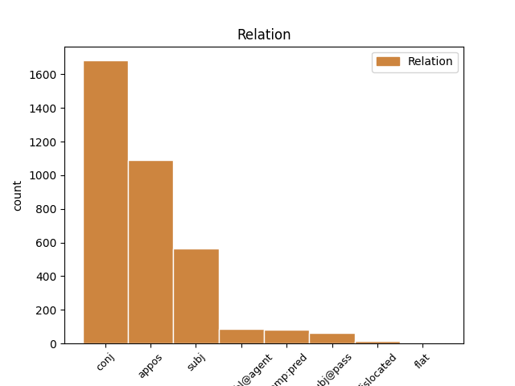

Distribution of features within this leaf

Agreement Rules sorted by frequency.
- When the dependent token is the conjunct(conj) of the head token, and the dependent token is NOUN.
1 Княземъ кънязь NOUN Nb Case=Dat|Gender=Masc|Number=Plur 0 _ _ _
2 слава _ _ _ _ 0 _ _ _
3 а _ _ _ _ 0 _ _ _
4 дружинѣ дружина NOUN Nb Case=Dat|Gender=Fem|Number=Sing 1 conj _ ref=218
1 Игорь игорь PROPN Ne Case=Nom|Gender=Masc|Number=Sing 0 _ _ _
2 князь кънязь NOUN Nb Case=Nom|Gender=Masc|Number=Sing 1 appos _ ref=211
3 въ _ _ _ _ 0 _ _ _
4 Руской _ _ _ _ 0 _ _ _
5 земли _ _ _ _ 0 _ _ _
1 Здрави съдравыи ADJ A- Case=Nom|Degree=Pos|Gender=Masc|Number=Plur|Strength=Strong 0 _ _ _
2 князи кънязь NOUN Nb Case=Nom|Gender=Masc|Number=Plur 1 subj _ ref=217
3 и _ _ _ _ 0 _ _ _
4 дружина _ _ _ _ 0 _ _ _
5 побарая _ _ _ _ 0 _ _ _
6 за _ _ _ _ 0 _ _ _
7 христьяны _ _ _ _ 0 _ _ _
8 на _ _ _ _ 0 _ _ _
9 поганыя _ _ _ _ 0 _ _ _
10 плъки _ _ _ _ 0 _ _ _
1 Ваю _ _ _ _ 0 _ _ _
2 храбрая _ _ _ _ 0 _ _ _
3 сердца сьрдьце NOUN Nb Case=Nom|Gender=Neut|Number=Plur 7 subj@pass _ ref=113
4 въ _ _ _ _ 0 _ _ _
5 жестоцемъ _ _ _ _ 0 _ _ _
6 харалузѣ _ _ _ _ 0 _ _ _
7 скована съковати VERB V- Case=Nom|Gender=Neut|Number=Plur|Strength=Strong|Tense=Past|VerbForm=Part|Voice=Pass 0 _ _ _
8 а _ _ _ _ 0 _ _ _
9 въ _ _ _ _ 0 _ _ _
10 буести _ _ _ _ 0 _ _ _
11 закалена _ _ _ _ 0 _ _ _
1 таче _ _ _ _ 0 _ _ _
2 се _ _ _ _ 0 _ _ _
3 ꙗко _ _ _ _ 0 _ _ _
4 ѹвѣдѣша _ _ _ _ 0 _ _ _
5 мнози _ _ _ _ 0 _ _ _
6 ѿ _ _ _ _ 0 _ _ _
7 болѧръ _ _ _ _ 0 _ _ _
8 сн҃ове сынъ NOUN Nb Case=Nom|Gender=Masc|Number=Plur 9 comp:pred _ ref=102
9 сѹще быти AUX V- Case=Nom|Gender=Masc|Number=Plur|Strength=Strong|Tense=Pres|VerbForm=Part|Voice=Act 0 _ _ _
10 въ _ _ _ _ 0 _ _ _
11 покаꙗнии _ _ _ _ 0 _ _ _
12 томѹ _ _ _ _ 0 _ _ _
13 ꙗкоже _ _ _ _ 0 _ _ _
14 прѣдани _ _ _ _ 0 _ _ _
15 бл҃жныимь _ _ _ _ 0 _ _ _
16 томѹ _ _ _ _ 0 _ _ _
17 съжалиша _ _ _ _ 0 _ _ _
18 сѧ _ _ _ _ 0 _ _ _
19 зѣло _ _ _ _ 0 _ _ _
20 ѥже _ _ _ _ 0 _ _ _
21 тако _ _ _ _ 0 _ _ _
22 дх҃овьныи _ _ _ _ 0 _ _ _
23 оц҃ь _ _ _ _ 0 _ _ _
24 ихъ _ _ _ _ 0 _ _ _
25 посрамленъ _ _ _ _ 0 _ _ _
26 бысть _ _ _ _ 0 _ _ _
27 и _ _ _ _ 0 _ _ _
28 ѿ _ _ _ _ 0 _ _ _
29 манастырѧ _ _ _ _ 0 _ _ _
30 ѿгънанъ _ _ _ _ 0 _ _ _
31 ѥгоже _ _ _ _ 0 _ _ _
32 приꙗтъ _ _ _ _ 0 _ _ _
33 ѿ _ _ _ _ 0 _ _ _
34 блаженаго _ _ _ _ 0 _ _ _
35 ѳеодисиѧ _ _ _ _ 0 _ _ _
1 Галичкы _ _ _ _ 0 _ _ _
2 Осмомыслѣ осмомыслъ NOUN Nb Case=Voc|Gender=Masc|Number=Sing 3 dislocated _ ref=130
3 Ярославе ярославъ PROPN Ne Case=Voc|Gender=Masc|Number=Sing 0 _ _ _
1 вʼ _ _ _ _ 0 _ _ _
2 а҃і _ _ _ _ 0 _ _ _
3 д҃нь _ _ _ _ 0 _ _ _
4 по _ _ _ _ 0 _ _ _
5 брани _ _ _ _ 0 _ _ _
6 посла _ _ _ _ 0 _ _ _
7 санʼчакʼ санъчакъбеи NOUN Nb Case=Gen|Gender=Masc|Number=Plur 0 _ _ _
8 бѣевъ бѣевъ NOUN Nb Case=Gen|Gender=Masc|Number=Plur 7 flat _ ref=317v13
9 по _ _ _ _ 0 _ _ _
10 всѣмъ _ _ _ _ 0 _ _ _
11 оулицамъ _ _ _ _ 0 _ _ _
12 со _ _ _ _ 0 _ _ _
13 многыми _ _ _ _ 0 _ _ _
14 людʼми _ _ _ _ 0 _ _ _
15 бранити _ _ _ _ 0 _ _ _
16 изʼрады _ _ _ _ 0 _ _ _
1 понеже _ _ _ _ 0 _ _ _
2 погубих _ _ _ _ 0 _ _ _
3 чл҃вки _ _ _ _ 0 _ _ _
4 грѣхъ _ _ _ _ 0 _ _ _
5 ихъ _ _ _ _ 0 _ _ _
6 ради _ _ _ _ 0 _ _ _
7 ныне _ _ _ _ 0 _ _ _
8 же _ _ _ _ 0 _ _ _
9 паки _ _ _ _ 0 _ _ _
10 водою _ _ _ _ 0 _ _ _
11 ѡчищю _ _ _ _ 0 _ _ _
12 грѣхи _ _ _ _ 0 _ _ _
13 члв҃кмъ _ _ _ _ 0 _ _ _
14 ѡбновленьемь объновление NOUN Nb Case=Ins|Gender=Neut|Number=Sing 0 _ _ _
15 водою вода NOUN Nb Case=Ins|Gender=Fem|Number=Sing 14 comp:obl@agent _ ref=105.6
Disagree Examples:
1 за _ _ _ _ 0 _ _ _
2 млт҃вѹ _ _ _ _ 0 _ _ _
3 ст҃хъ _ _ _ _ 0 _ _ _
4 ѡц҃ь _ _ _ _ 0 _ _ _
5 наших _ _ _ _ 0 _ _ _
6 г҃и _ _ _ _ 0 _ _ _
7 їс҃е _ _ _ _ 0 _ _ _
8 х҃е _ _ _ _ 0 _ _ _
9 сн҃е _ _ _ _ 0 _ _ _
10 бж҃їи _ _ _ _ 0 _ _ _
11 помилѹи _ _ _ _ 0 _ _ _
12 мѧ азъ PRON Pp Case=Acc|Gender=Masc|Number=Sing|Person=1|PronType=Prs 0 _ _ _
13 раба рабъ NOUN Nb Case=Gen|Gender=Masc|Number=Sing 12 appos _ ref=1
14 своего _ _ _ _ 0 _ _ _
15 грѣш꙽наго _ _ _ _ 0 _ _ _
16 афонасьѧ _ _ _ _ 0 _ _ _
17 микитина _ _ _ _ 0 _ _ _
18 сна _ _ _ _ 0 _ _ _
1 а _ _ _ _ 0 _ _ _
2 нас _ _ _ _ 0 _ _ _
3 ѿпѹстили отъпустити VERB V- Aspect=Res|Case=Nom|Gender=Masc|Number=Plur|Strength=Strong|VerbForm=Part|Voice=Act 0 _ _ _
4 голими _ _ _ _ 0 _ _ _
5 головами голова NOUN Nb Case=Ins|Gender=Fem|Number=Plur 3 comp:pred _ ref=3
6 за _ _ _ _ 0 _ _ _
7 море _ _ _ _ 0 _ _ _
1 вино _ _ _ _ 0 _ _ _
2 же _ _ _ _ 0 _ _ _
3 ѹ _ _ _ _ 0 _ _ _
4 нихъ _ _ _ _ 0 _ _ _
5 чинѧть _ _ _ _ 0 _ _ _
6 в _ _ _ _ 0 _ _ _
7 великых _ _ _ _ 0 _ _ _
8 ѡрѣсех орѣхъ NOUN Nb Case=Loc|Gender=Masc|Number=Plur 0 _ _ _
9 кози кози NOUN Nb Case=Nom|Gender=Masc|Number=Plur 8 appos _ ref=7
10 гѹндѹстаньскаа _ _ _ _ 0 _ _ _
1 чюнеръ _ _ _ _ 0 _ _ _
2 же _ _ _ _ 0 _ _ _
3 град _ _ _ _ 0 _ _ _
4 есть _ _ _ _ 0 _ _ _
5 на _ _ _ _ 0 _ _ _
6 ѡстровꙋ _ _ _ _ 0 _ _ _
7 на _ _ _ _ 0 _ _ _
8 каменомъ _ _ _ _ 0 _ _ _
9 не _ _ _ _ 0 _ _ _
10 дѣланъ _ _ _ _ 0 _ _ _
11 ничим _ _ _ _ 0 _ _ _
12 бг҃мь богъ NOUN Nb Case=Ins|Gender=Masc|Number=Sing 13 comp:obl@agent _ ref=7
13 сътворенъ сътворити VERB V- Case=Nom|Gender=Masc|Number=Sing|Strength=Strong|Tense=Past|VerbForm=Part|Voice=Pass 0 _ _ _
1 а _ _ _ _ 0 _ _ _
2 бои бои NOUN Nb Case=Nom|Gender=Masc|Number=Plur 5 subj _ ref=9
3 их _ _ _ _ 0 _ _ _
4 все _ _ _ _ 0 _ _ _
5 слоны слонъ NOUN Nb Case=Ins|Gender=Masc|Number=Plur 0 _ _ _